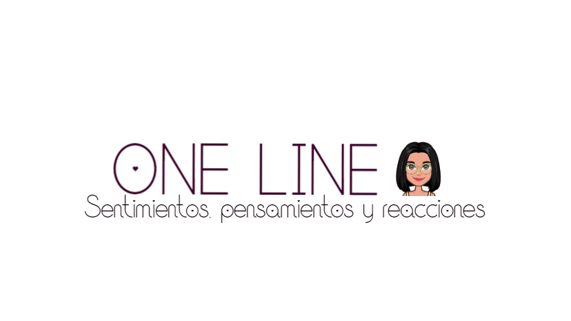
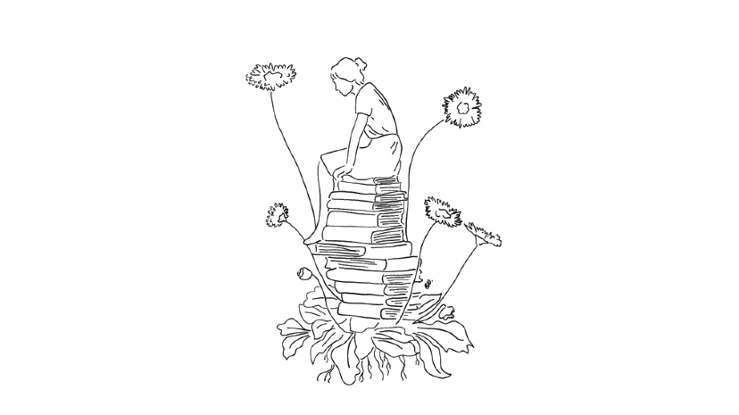
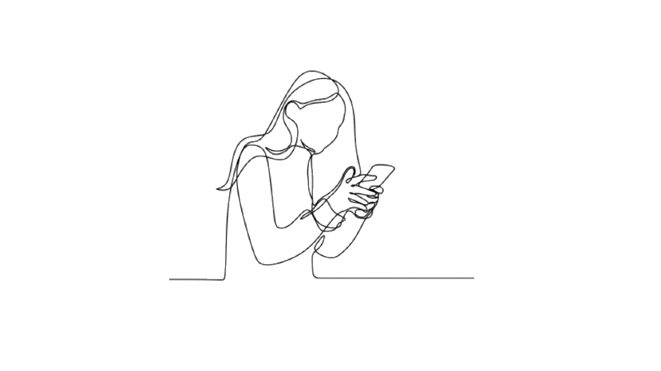
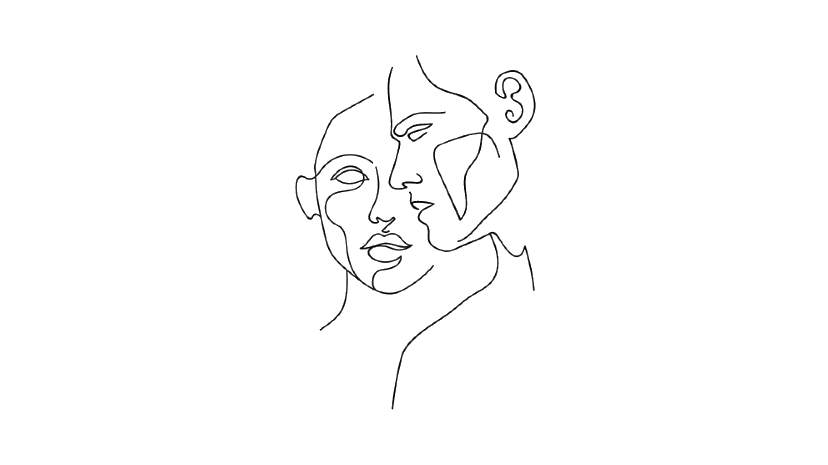
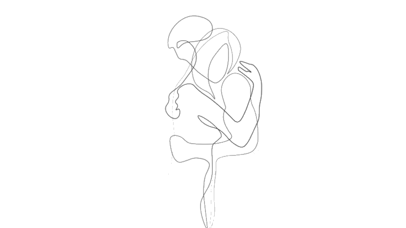
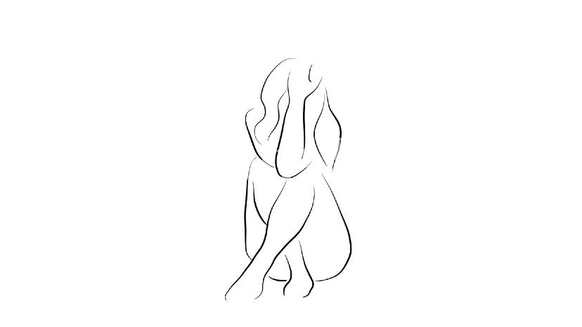
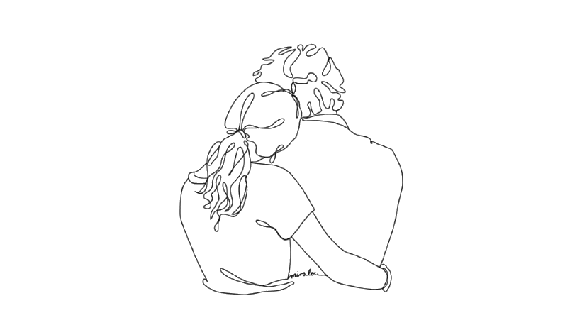
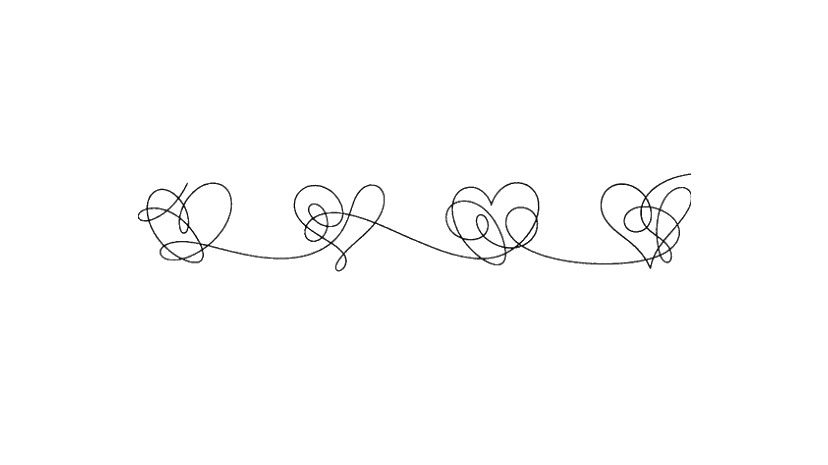

Bienvenidos a mi página de one line
DE INTERPRETACIONES Y EMOCIONES
Para poder dar una contextualizacion sobre la idea principal del porque quise hablar de esto, fue porque uno no siempre tiene la oportunidad de hablar o de escribir lo que uno siente, lo que uno llora o lo que vive con respecto a una palabra muy fácil de escribir pero muy difícil de decir, fácil de la boca para afuera pero difícil de sentir, una emoción que no se siente con toda persona,una emoción que no ocurre siempre no como el "te quiero", que según yo es mas fácil en todo aspecto, al tener preocupación, al tener uno que otro afecto con la otra persona.
"Te enamoras de las pequeñas cosas de alguien, el sonido de su risa, el brillo de sus ojos o simplemente su manera de sonreír".
La mayoría de las veces se siente un nudo en la garganta al no poder expresar lo que uno siente y menos si no se encuentra la persona correcta como para que te entienda, para que te aliente, para que te de fuerzas y ánimo para poder superar las barreras que te dan, de las cuales las mayorías se dejan pasar, para que el tiempo las cure, pero por mas que pasen una cantidad de meses para cumplir años, ese amor que siente, ese amor que uno quiere olvidar, no se va, pero no es porque uno no quiera en su totalidad sino también que al recordar un solo momento en algo parecido, este vuelve a la mente de uno, llegando como si nada a los recuerdos, a la memoria, al sentimiento que uno sintio en ese determinado momento, llegan al corazón de uno, donde llega a cuestionarse del porqué de las cosas, del por qué pasó esto, del por qué senti eso, del por qué a veces uno se enamora de alguien que no es de uno.

MIEDO, TEMOR AL HABLA
Existen momentos, circunstancias en las que uno puede tener miedo, termor a perder a la persona que uno tanto ama o a la persona que uno tanto quiere, miedo a no querer afrontar lo sucedido o lo que sucedera al poder establecer una conversación sobre el tema, temor o angustia a lo que dira el otro, un previo dolor físico y sentimental a futuras respuestas que obtendra, pero siento que siempre sera lo mejor afrontar ese tema, afrontar lo que uno siente, si sucede algo bueno, lo que no significa que lo que uno quiere sea lo correcto, claramente, o sea algo malo, que uno lo encuentra así , porque no es lo que se quiere en realidad, en ambos casos sucedera por algo,respuesta que dolera o te hara seguir en un mismo rumbo, pero con mejor pavimento. Seguir en ese mismo camino a pesar de que algo pudo cambiar, o mejor aún que nada haya cambiado entre los dos, que uno pueda seguir hablando, riendo, no como que no paso nada, porque sí paso, pero tener esa paz de que se soluciono, de que se hablo, seguir como antes, escuchandolo, escuchar como rie, imaginar su sonrisa, y saber que amas eso. Eso lo encuentro hermoso.
(+)
Para añadir algo concreto, me gustaría contar algo que me paso hace un tiempo.
Lo contaria como primera persona para llegar a entender algunas cosas.
Hace un tiempo me sucedió algo con respecto a lo que hablé sobre el "miedo, temor al habla", en donde efectivamente me dio un dolor físico y sentimental a escribirle a tal persona lo que yo sentía, lo que por una parte mis sentimientos expresaban, me tomo un tiempo en pensar si eso era lo correcto, si es que era el momento de hablar lo que tenia adentro, al saber su respuesta mas bien, tenia miedo a perderlo, a que dejaramos de hablar, miedo a que todo se rompiera por algo que yo solo sentía, y que no era mutuo, a pesar de que su trato hacia mi, es agradable, es de confianza hasta un cierto punto, es alguien a quien uno le puede hablar sin sentir miedo, llegar llorando aunque solo sea virtual, pero ahi esta, a la hora que esta su respuesta, te apoya, te sube el animo, te aconseja a su punto de vista, porque no estan diferente, miedo a que todo eso se acabe, aunque uno no se conozca en persona.
Al hablar un día todo lo que sentia, ese miedo, el corazón palpitando a una velocidad no común, uno lo que hace es estar mirando a un momento prácticamente corto el celular, pero querer dejar todo de lado.

Mirar si respondió , aunque el miedo abunda, esa palpitación que no es agradable y ver que responde, tener miedo a lo que dirá , y decirle que tengo miedo, y leer que me dice que no es nada malo, que debo estar tranquila, da una sensación de paz, una sensación de querer escuchar lo que te quiere decir, estar tranquila por una lado, porque ya sabe de antemano tu miedo, a que no lo quieres perder y más aún, querer que todo siga como antes, aunque sabes que digas lo que digas, seguiras sintiendo algo, porque no cambia de un día para otro lo que uno siente, por mas que su respuesta no sea la que uno quiera escuchar,aunque solo sean ideas de uno, aunque sus futuras respuestas sean parte de una imaginación, pero, que en si, te responde algo bueno. Mencionar que al tener esa oportunidad de poder conversar y aclarar los términos por asi decirlo, se siente bien, por mas que la preocupación abunde, que el miedo, que el temor,que la angustia te coman. Te coma una parte de ti, la parte que al mismo tiempo te duele, la parte que se llena de nervios y querer dejar todo por un buen rato. Todo donde la inseguridad se hace persona.
EXPRESIÓN, SIGNIFICADO E IDEOLOGÍA
Una de las expresiones, uno de los sintimientos más lindos que puede haber entre el amor, es su significado, el que le da cada persona, para mi,es preocupación, es respeto, aquel amor o cariño, como le llamen al sentimiento real que uno siente por el otro, es sumamente importante para ambos factores,si uno no se preocupa por el otro,entonces, ¿por que le dices que lo amas? si no respetas el amor, si no respetas a la otra persona ¿por que dices que lo amas? encuentro que no tiene sentido. La persona si no te valora, no te ama, si la persona no te respeta, no respeta tus decisiones, no respeta tu cuerpo, entonces no te valora,no tiene sentido tener miedo a perder a quien no le importas, si no te habla es por algo, no siento que hay que insistir en algo que no tiene nada de valor. La expresión, tu manera de ver las cosas es sumemente valeredo, no todos somos iguales, no todos hablamos igual, la forma en la que nos criamos es sumamente diferente, cada familia tiene su propia raiz, su propia ideologia, algunos son liberales otros conservadores, pero ambos se pueden llegar a juntar, personas con diferentes ideologias cambian por el otro, cambian por el amor que se sienten.
(+)
"Todos tenemos tiempo, para lo que tenemos ganas".
"A nadie se le insiste por un lugar, por un poco de amor o por un cambio.Todo aquello que nos merece fluye sin necesidad de pedirlo".
Colocare algo que lo mas probable sea super contradictorio a lo que se escribe más arriba, relacionado, que si uno no contesta (hablando por redes sociales,durante esta pandemia) , de que si es por algo, de que si esto, de que lo otro, etc. Pero hay un punto super importante, que es difícil de aceptar, pero si uno esta ocupado, y no contesta, no significa que no quiere, o no pueda, esta en toda libertad de estar concentrado en solo un tema, ¿por que insistir? si lo amas, si lo quieres ¿por que esperas su mensaje? ¿Por que esperas una respuesta? Si uno sabe que puede estar ocupado. Por eso hable de la aceptación, término que se usa para ambas personas, acepta que esta ocupado, acepta que tiene cosas que hacer, acepta lo que hace, porque quien no dice ¿que esta ocupado para lograr ser mejor? (descartando muchos temas, muchas preguntas, muchas respuestas, muchas personas, solo me dirijo a uno) si lo amas, acepta, apoyalo a que sea mucho mejor persona, está con él, sé parte de su proceso, de su cambio futuro si es que va al tema. Uno nunca sera una molestia para la persona correcta o para quien te estima. Sé parte de su estudio, se parte de esa persona, de ese cambio positivo, cuyo cambio que solo tiene un camino, un camino concreto, cuyo que tiene metas, caidas, levantos, y más tropiezos, acompañalo, apoyalo, aceptalo, ayudalo. Si hay cariño mutuo, si hay amor, si hay aprecio, si hay valoración, ambos seguirán, ambos llegaban al destino.
"Quien te quiere de verdad te aceptará, pero también te ayudará a mejorar"
(+)
Hace un tiempo, hubo un dato super importante, un dato que aconseja, un dato no estable, un dato hermoso, un dato con fuerza, el cual, haría todo para seguir escuchando, leyendo, riendo, imaginando su contenido, el contenido del dato que hace bien, un dato no es el reemplazo de otro, un dato de algo, es algo más, algo como una preocupación, algo continuo, una simbologia, tú no reemplazas el dos por el uno sin antes tener una buena razón numérica de un procedimiento, el dato al ser una representación numérica no se cambia porque si, no eres un reemplazo, eres una ayuda, eres aliento, la cual se acumula al paso del tiempo, como los números que se van sumando que se van multiplicando, pero no reemplazando. Eres un dato que da fuerza a un número racional, que se divide, que parte su contenido por uno entero y por un natural positivo, cuya última parte, estaria representando lo que provoca el dato en este caso, con el dato, con sus aportes, con su ánimo, con su risa, con su consejo para dar esa parte positiva de uno mismo, para un cambio natural positivo, junto a la parte entera, que seria uno, uno mismo seria el número racional, que necesita su parte positiva. Cuya parte que te hace ser mejor cada día, cuyo dato que seria hermoso que fuera parte de uno, un dato que no quieres soltar, cuyo que a pesar del tiempo, tienes que olvidar su simbología por su inestabilidad, pero que al mismo tiempo apoyes su resultado final, que aceptes, que seas parte de su alegría, que el dato numérico y el procedimiento sea natural y positivo.

CONTACTO
Hay días en los que uno puede tener mucha inspiración para poder escribir lo que siente, otros que solo se quieren llorar y otros en los que les gusta hablar, estar acompañado, tener amistades sociales por medio de una pantalla, amistades que pueden ser reales y otros que solo son para temas, amistades que valoran, amistades que a pesar de que uno este lejos, están aún más cerca, aquellas que pueden subir el ánimo , que te conocen, que no te dejan a pesar de los problemas, a pesar de que uno tenga poco contacto, aquellos que notan la diferencia de tu estado de ánimo aunque no te vean, que son solo por leer un mensaje que para ellos les suena diferente, aquellos amigos que les puedes contar de todo, cada amor, cada desilusión, cada locura que tu tienes, cada locura que te da la otra persona a la cual tu amas o tu quieres, que te aconsejan, que te dan su punto de vista, que te hacen razonar antes de actuar. Donde cada abrazo de esa persona te hace estar segura, segura de tus debilidades, segura de ti misma, que te dan una paz interior, cuyo abrazo que quieres más que su tiempo limitado, cuyo, que no todos dan, abrazos que son de conexión aunque que no sean de uno, que tiene propiedad.Abrazo de la persona que no es tu amigo, abrazo de alguien que uno confunde, abrazo de la persona a la cual no le tienes la confianza necesaria, abrazo de paz de la persona que solo conoces, pero que no conoces, abrazo de alguien que solo lo viste por unos años, que solo ocupara el lugar del abrazo pero no de la amitad, un amor que no es tuyo.Un amor no ideal, uno que no es compatible, uno, que solo en los pensamientos se hacen realidad, uno que solo es de un 50%, aunque uno desea que fuera el 100.

(+)
Cuando mi ubicación era distinta, conocí a una persona, la cual, refleja varios puntos de los que hable anteriormente, cuyos abrazos hacen falta por su lejanía, abrazos que duran un minuto cada una semana, minuto que da paz, minuto que hacen sentir, sentir seguridad en medio del caos, minuto que te dan varios sin dudarlo pero no con el mismo significado, no con la misma fuerza que te da ese minuto. Me hacía estar bien, hasta llegar al punto de llorar por su ausencia, llorar porque a pesar de que su ubicación solo sean unas pocas horas, la barrera que se da, es mucha, ya que no era mio, ya que esos abrazos ya tenían destino, destino que no llegaba a mi ubicación. Ubicación que se encuentra en un mismo plano, en un plano cercano, pero a la vez demasiado lejos. Los minutos de distancia se hacen horas, y las horas días, tiempo suficiente para pensar si es necesario viajar por un solo minuto, cuyo minuto está alejado por 60 segundos los cuales se transforman en metros, los metros del ancho de la barrera invisible, donde todo eso se queda en tu imaginación, se instalan en cada sueño, en donde todo forma parte de tu recuerdo.

Existen personas, que por mas que pase mucho tiempo, no se olvidan, a pesar de que uno puede llegar a pensar que si, que pudiste sacar a esa persona de tu mente, persona que a uno nos hizo bien, que a pesar del todo bien que pudo hacer sin que se diera cuenta, la ausencia es lo que mas duele. Llorar por quererlo cerca, llorar cada vez por estar ahogada, y que es tu salvación, pero no lo sabe, que no tiene manera de saber que su abrazo salva, llorar cada vez hasta quedarse dormida, porque botar gotas saladas solo se hace de noche al tener un momento a solas, tener esa oportunidad de pensar con claridad, de estar a solas, mientras otros duermen, la noche te da ese momento, donde la paz abunda y el ruido retumba en tu cabeza, pensamientos y recuerdos que duelen. Hasta darse cuenta que todo lo bien que te hizo al final el dolor que produce es el doble, pensar que nada de eso te hace bien, tener la mentalidad de querer olvidarlo aunque tu corazón no quiera, no quiera que él se vaya de ti, que todo eso se quede dentro, que sigas pensando en lo bien que hizo sin ser nada, ese bien que se coloca en duda, del porqué paso, del porqué, si su ubicación, si su corazón tiene otro destino, la cual por un tiempo se mantuvo entre cuatro mentes, su mente, la mente de su corazón, la mente de su ubicación y mi mente.

ENERGÍA, BATERIA PARA EL CORAZÓN
“Pero, ¿tú me amas?”
Pregunto Alicia.
“¡No, no te amo!”
Respondió el Conejo Blanco.
Alicia arrugo la frente y comenzó a frotarse las manos, como hacia siempre cuando se sentía herida.
“¿Lo ves? Dijo el Conejo Blanco. Ahora te estarás preguntando qué has hecho mal, para que no consiga quererte al menos un poco, que te hace tan imperfecta, fragmentada. Es por eso que no puedo amarte.
Porque habrá días en los cuales estaré cansado, enojado, con la cabeza en las nubes y te lastimare.
Cada día pisoteamos los sentimientos por aburrimiento, descuidos e incomprensiones.
Pero si no te amas al menos un poco, si no creas una coraza de pura alegría alrededor de tu corazón, mis débiles dardos se harán letales y te destruirán.
La primera vez que te vi hice un pacto conmigo mismo:
“evitare amarte hasta que no hayas aprendido a amarte a ti misma”. Por eso Alicia no, no te amo. No puedo hacerlo.
“Alicia en el país de las maravillas”- Lewis Carrol.
Fragmento fácil de leer, fácil de entender, pero difícil de hacer. Difícil para llevarlo a cabo, difícil querer entender que eso es lo correcto, difícil hacer creer al corazón que el amor y la felicidad debe ser independiente y no dependiente, que dependa de uno y no por la compañía del otro, que tu felicidad y tu amor propio llene la batería de tu corazón, que se apodere de ti, que ambos sentimientos se complementen, porque no hay amor sin felicidad, ni felicidad sin amor. Teoría que puede llegar a ser fácil, fácil querer hacerlo, empezar con ganas y tener la disposición de levantarse y que todo salga bien, querer cambiar, pero para mí no lo es, mi felicidad es dependiente, y eso me hace estar mal, me hace llorar cada vez que yo no doy más, cada vez que la conexión se corta, que las palabras se hacen ausentes cada hora, cada día, cada lejanía de cada letra, que la voz ya no es la misma, que la reacción cambia, donde sientes que su energía disminuye al paso del tiempo, que no puedes tener la fuerza para sostener ambos pesos, pero que todos los pensamientos del día se basan en eso, que te imaginas momentos de felicidad a su lado, que creas escenas imaginables, que solo son efecto de tus constantes pensamientos, donde idealizas ser feliz con alguien más, donde recuerdas cada risa que te dio, cada instante de felicidad, de cariño, de amor propio, donde te hace ser mejor, donde te hace creer que lo eres, pero que solo pueden ser palabras vacías, sin sentimientos, palabras que llegan textos sin fondo.
Su energía positiva me llena, llena el corazón vacío, llena cada parte de angustia vivida, llena esa parte del corazón que duele cada día por los recuerdos, aquellos que rompían aún más el corazón, las ganas de seguir, las ganas de poder hacer algo bueno, su energía alimenta cada parte, lo llena como si nada, lo llena en cada conversación, con cada risa, donde con solo escucharla uno se imagina ese momento a través de la pantalla, se imagina esa sonrisa plasmada en su rostro como si se lo conociera frente a frente, cosa que no es, su luz se convierte en energía, la energía en batería, y la batería llena al corazón, donde todo tiene su tiempo, tiempo que se hace más largo, que trascurre por cada mensaje recibido, por cada mensaje leído y no contestado y el tiempo sigue en su camino, sin detenerse, mientras el corazón al otro lado de la pantalla se va apagando por la distancia sin conexión que se va formando.

(+)
Echo de menos levantarme con tu mensaje, con tu risa, con tu voz en mi pantalla, con tu hora de dormido que siempre cambia. Pasan los días y solo miro el calendario y recuerdo que solo llevo siete días y no sé si podre con el octavo sin extrañarte más de lo que echo esta semana, extrañar esa conexión, extrañar cada mensaje, cada respuesta sabia que me das que me encanta y que pueda leer, escuchar cada vez que lo necesite, cada vez que quiera, porque si no quedan en la memoria quedan en la nube, porque cada risa tuya queda grabada en mi mente, en mi corazón y que me dan ánimo, que me dan alegría. Tu risa es mágica, traspasa barreras de distancia, barreras de metros y metros, una barrera sólida en el camino pero trasparente por el aire, que con tan solo escucharla, esa misma felicidad tuya entra en mí, entran en cada uno de los doce músculos que utilizamos para sonreír, una risa que contagia, una risa que enamora cada vez, tu risa es la que me encanta en este preciso momento, porque dicen que la risa es la cura de todo, pero en realidad te sana quien la provoca, que en este caso eres tú, has sido tu desde hace meses, y no como un reemplazo, porque no lo eres. Eres la persona que hace olvidar el dolor, el llanto, la frustración a las tres de la mañana, pero también eres el dolor interno, que produces por la falta conexión.

DIVISIÓN
Existen momentos, circunstancias en el que tu corazón se puede ver divido, confundido por la llegada de otro corazón, corazón que por más que uno pueda evitar existe una conexión entre ambos, existiendo ya de ante mano el corazón dueño, donde tus pensamientos, tus acciones, donde las miradas y las risas son inevitables entre el primer y el tercer corazón, el que llego un día de la nada, permaneciendo el segundo en otra ubicación donde su destino se está complicando, pero siempre ha permanecido, desde que se produjo la unión entre los dos primeros, cuya conexión que al tercer corazón aun afecta, aunque piense que su felicidad es lo primero, lo primero en su lista, lista donde cada palabra se va borrando con cada gota salada, cada gota trasparente caída en la oscuridad de cada día, caída en cada sesión de tristeza, de recuerdos dados por los dos en su determinado tiempo, tiempo que solo queda en la memoria del tercer corazón, cuyo fue el único afectado o eso es lo que se piensa, sin saber y sin poder leer el libro que lleva adentro el primer corazón, corazón incrustado en las dos mentes. Donde solo uno es ubicación-destino. El tercer corazón es el que se va, el que sobra, porque una relación es de dos, y el corazón dueño es el que toma la dedición de su destino, aunque:
“Si amas dos personas al mismo tiempo, elige la segunda. Porque si realmente amaras a la primera no te habrías enamorado del segundo”.
Donde en este caso, el segundo que sería el tercer corazón, mas, que el dueño ya sabía que no eran compatibles, esa conexión, esas miradas cruzadas, esas miradas a los ojos, esas sonrisas de cerca, donde esos abrazos de paz que podían desaparecer a todos de su alrededor, donde se borraba la importancia lo que dirían los demás, ya no tenían y no debían tener espacio para su corazón porque ya había tomado una decisión y era el primer corazón que llego hacia él.

PER TE
La mayor parte de mi alegría durante el transcurso del día eres tú, es tu risa, es tu voz, es cada mensaje recibido durante cada minuto, cada hora, alegría que también es pena, pena por la inestabilidad, pena que no debería sentir porque no debería tener motivo, pero sabes, me gusta la forma como me tratas, me gusta tu forma de hablarme, me gusta cómo me alegras el día, me gusta cómo sin verte ya te siento, me gusta pensar en ti cuando no estas, me gusta tu físico, me gusta tu ser. Me gustas tú. Aunque se, que te tengo que olvidar para no sufrir, para no sufrir por tu inestabilidad. Pero, gracias por no dejar que me derrumba, por aconsejarme y darme ese tal abrazo para llorar. Gracias, porque hay pocas personas que se quedan cuando todo se viene abajo, y tú eres una de ellas. No solo te quedaste, sino que estuviste diciéndome que saldría y salí de ese hueco al que me estaba acostumbrando.
Hay algo dentro de mí que dice que no lo debería decir, que no te lo debería escribir, pero que en realidad lo siento, y es que te quiero, y mucho, que no te quiero perder.